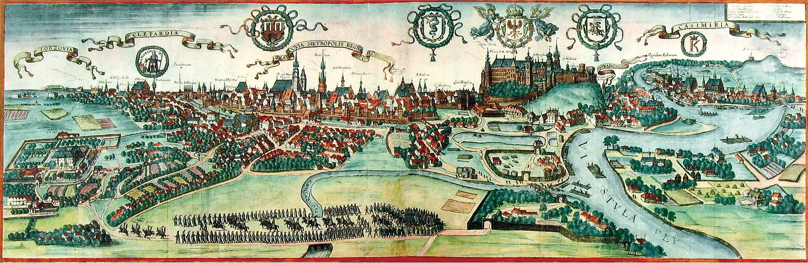

Kraków, Stołeczne Królewskie Miasto Kraków – miasto na prawach powiatu położone w południowej Polsce nad Wisłą, drugie co do liczby mieszkańców[1]. Formalna stolica Polski do 1795 roku i miasto koronacyjne oraz nekropolia królów Polski. Od 1000 roku nieprzerwanie stolica diecezji krakowskiej (jednej z pięciu w ówczesnej Polsce), a od 1925 archidiecezji i metropolii. Lokowany przed 1228 rokiem, ponownie w 1257 r.[5]. Od odzyskania niepodległości w 1918 r. miasto wojewódzkie (od 1999 r. siedziba władz województwa małopolskiego), jest także centralnym ośrodkiem metropolitalnym aglomeracji krakowskiej i Krakowskiego Obszaru Metropolitalnego. Kraków jest stolicą historycznej Małopolski. Leży na obszarze Bramy Krakowskiej, Niecki Nidziańskiej i Pogórza Zachodniobeskidzkiego.
Jedziemy do Krakowa!
Dziś jedziemy do Krakowa
Każda da ma już gotowa
By zobaczyć go o d nowa
Znów jedziemy do Krakowa
Kamieniczek tu jest wiele
Piękne parki przy kościele
Miejsce spotkań co niedzielę
Kamienic zek tu jest wiele!
Kalina Rokosz
Pełna wersja jedziemy do krakowa

- Mapa
- Ciekawe miejsca
- Zabytki
- Sport
- Mapa
- Ciekawe miejsca
- Zabytki
- Sport
| Nazwa rezerwatu | Powierzchnia | Przedmiot ochrony |
|---|---|---|
| Bielańskie skały | 1,73 ha | Spontaniczne procesy sukcesji biocenoz |
| Bonarka | 2,29 ha | Rezerwat geologiczny |